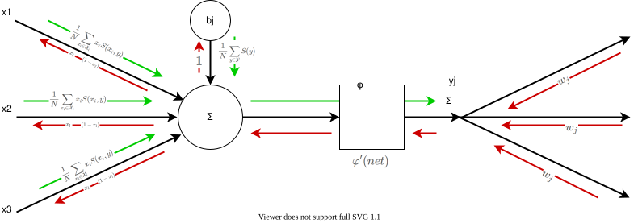

How the network is trained
The entropy framework
Since the network contains feedback cycles, the usual backpropagation algorithm won't work very well. Furthermore, relying on handcrafted labels that are applied to the output of the network is very error-prone and it creates a large distance between our training signal and the weights that we would like to adjust. Hence, we would like to train our neurons more locally without a reliance on an external signal source. This is where the Shannon entropy framework comes quite in handy. If we consider the example of a word pattern again, we can measure the amount of information for each letter — that is, the number of bits required to represent this letter in a message — by calculating the Shannon entropy. We can then look at the word pattern neuron as a way of compressing the information given by the individual letter neurons. This compression can be formalized using mutual information, which can then be used to derive an objective function for our training algorithm. The resulting derivative function exhibits a very interesting and unexpected behavior with regard to when the synapse weights and neuron bias values increase or decrease. Before we go on, let's first have a look at the formula for calculating entropy: $$H(X) = -\sum_{i=1}^n {\mathrm{P}(x_i) \log \mathrm{P}(x_i)}$$ This formula is actually comprised of two parts. The first involves the Shannon information or information content or surprisal part: $$S(x) = -\log_b{\left(P\right)}$$ The second involves the calculation of the expected value of the surprisal: $$\operatorname{E}[X] =\sum_{i=1}^n x_i\,p_i$$ The Shannon information can be interpreted as quantifying the level of "surprise" of a particular outcome. So, events with a high probability have a low surprisal value and events with a low probability have a high surprisal value.

Information gain
Now that we have an understanding of the basics of Shannon entropy, we can see what information gain is
and how it is calculated. Information gain quantifies the "amount of information" obtained about one random
variable through the observation of another random variable. In our example, the observed random variable would be that of
the letter, and the other that of the word. The formula for information gain is as follows:
$$I(X;Y) = \sum_{y \in \mathcal Y} \sum_{x \in \mathcal X}
{ p_{(X,Y)}(x, y) \log{ \left(\frac{p_{(X,Y)}(x, y)}{p_X(x)\,p_Y(y)} \right) }} $$
To get a better understanding of this formula, we can take a closer look at its components.
It actually uses the concept of Kullback-Leibler divergence to calculate the divergence between the
joint distribution of \(X\) and \(Y\) and the product of the marginals.
$$D_\text{KL}(P \parallel Q) = \sum_{x\in\mathcal{X}} P(x) \log\left(\frac{P(x)}{Q(x)}\right)$$
In other words, we are using KL divergence to compare the joint distribution of \(X\) and \(Y\) to the
special case in which these occur independently of each other.
Before going forward, we would like to introduce a slightly different notion of information gain:
$$I(X_i;Y) = \sum_{y \in \mathcal Y} \sum_{x_i \in \mathcal X_i}
{ p_{(X_i,Y)}(x_i, y) \left( \log{p_{(X_i,Y)}(x_i, y)} - \log{p_{X_i}(x_i)} - \log{p_Y(y)} \right) } $$
As you can see, the surprisal values of different probability distributions now lie at the core of this formula.
The outer part is simply the calculation of the expected value of the inner part.
To clarify the variables and indices, we would like to give a brief overview:
The set \(\mathcal Y\) contains the positive and negative or fired and non-fired states of the current neuron. Hence, \(p_Y(y)\) and \(p_Y(\neg y)\) are
the probabilities of these two states. The same holds for the set \(\mathcal X_i\) that simply contains the positive and negative states of the input neuron
of the synapse \(i\). This means that, if we consider the probabilities of the synapse \(i\), we get four different states: \(p(x_i,y), p(\neg x_i,y), p(x_i,\neg y), p(\neg x_i,\neg y)\)
Note that there is a strong asymmetry between the positive and negative cases. If you take, for example, the probability distribution for the neuron representing a very common word like “the,” the probability for the negative case will still be far greater than that for the positive case. Since the surprisal is inversely related to the probability, the contribution of the surprisal of the negative case can often be neglected.
The entropy model for a neuron
To figure out how the objective function may look, we need to take a closer look at the neuron and its input synapses. Let us consider the synapses as information consumers and the neuron itself as an information producer. The synapses or information consumers can now be modeled using the information gain \(I\) and the neuron itself can be modeled using the entropy \(H\). $$G = H(Y) - \sum \limits _{i} I(X_i, Y)$$ In this model, we make the implicit assumption that the probability distributions of the input synapses are independent of each other, except in the case that they are all activated together. In that case, the neuron would fire, and we can use it as a compressed representation of its inputs.
Counting Frequencies
Since the calculation of the entropy relies on probability distributions, we need to figure how we can determine these. This part may sound easier than it actually is, since there are some pitfalls to consider. A simple way to estimate the probability for a neuron would look like this: $$P(neuron) = \frac{\text{number of fired activations}}{\text{size of the sample space}}$$ Counting the number of fired activations for a neuron is easy, but questions remain: 1) how do we determine the sample space? and 2) is the sample space equal for all the neurons? The answer to the latter question is “no”. The size of the sample space depends on the space that the activations cover in the input data set. For example, an activation representing a single letter requires less space than does an activation representing a whole word. In the case of a neuron representing a single letter, we could determine the size of the sample space \(N\) by summing up the number of characters of all the training documents. For neurons whose activations cover a larger space within the document, we need to divide the total number of characters by the average covered area of these neurons’ activations. $$N_{chars} = \text{number of characters over all training examples}$$ $$c = \text{average space covered by activations of a neuron}$$ $$N = N_{chars} \cdot c$$
The Beta-Distribution
Another problem with estimating probability distributions is that we might not have enough training instances for a reliable statistic after inducing a new neuron or a new synapse. Yet, we still want to be able adjust the weights of this neuron. Hence, we need a conservative estimate of what we already know for certain about the distribution. Considering that the surprisal (\(-log(p)\)) only gets large when the probability gets close to zero, we can use cumulative beta-distribution in order to determine what the maximum probability is that can be explained by the observed frequencies. Lets consider an example wherein the frequency \(f\) is 10 and our sample space \(N\) is 100. Then we need to choose the parameters \(\alpha\) and \(\beta\) in the following manner. $$\alpha = f + 1$$ $$\beta = (N - f) + 1$$ The probability density function \(f(x;\alpha,\beta)\) of the beta-distribution then looks as follows:

Here, we can see how likely each probability estimate is given our measured frequency. In order to choose a reliable estimated probability we need to look at the cumulative distribution function:

If we invert this function and select a threshold, say 5%, then we can estimate an upper bound for our true probability. In other words, we are now 95% certain that the true probability distribution underlying the measurement is lower than our estimate. Consequently, we are now able to compute a lower bound value for the surprisal value.
The optimization problem
Since we would like to optimize the compression rate within the network, we need to find a way to adjust the synapse weights and the neuron biases such that the network requires less information to encode the message of the input data. To do so we will need an objective function that we can convert to its first derivative. With this derivative function we are then able to use the gradient decent method to adjust the synapse weights and bias values.
Before going into more detail, we would like to break up the calculation of the derivative function into three more easily comprehensible parts. The first, or outer part, includes the derivative of the information gain and entropy functions. The second consists of the derivative of the activation function, while the third, or inner part, consists of the derivative of the weighted sum.
The outer part
To calculate the outer part for our derivative function we start out with equation 7. This first part is fairly simple and can be rewritten using the sum rule: $$G' = H'(Y) - \sum \limits _{i} I'(X_i, Y)$$
Now, before we go on to calculate the derivative of the information-gain function, we need to make the simplifying assumptions that the surprisal parts of the equation are considered constants. So, if we take equation 6, we can split it into two simpler parts and consider the \(S(x_i, y)\) part as constant. $$S(x_i,y) = \log{p(x_i, y)} - \log{p(x_i)} - \log{p(y)} $$ $$I(X_i;Y) = \sum_{y \in \mathcal Y} \sum_{x_i \in \mathcal X_i} { p_{(X_i,Y)}(x_i, y) S(x_i, y) } $$ The only variable left that we need to consider while calculating the derivative is the probability \(p_{(X,Y)}(x, y)\). This can be computed using the frequency \(f_{(X_i,Y)}(x_i, y)\) and the number of trainings instances \(N\). $$p_{(X_i,Y)}(x_i, y) = \frac{f_{(X_i,Y)}(x_i, y)}{N}$$ Where the frequency \(f_{(X_i,Y)}(x_i, y)\) is just the sum of all fired activations.
Now we have a slight problem arising. \(p_{(X_i,Y)}(x_i, y)\) is a distribution over the discrete random variable \(\mathcal Y\) and \(\mathcal X_i\). Unfortunately, we need a continuous function in order to calculate its derivative. That is the reason that we use \(x_{il} y_l\) as a model for counting a single trainings instance \(l\). $$f_{(X_i,Y)}(x_i, y) = \sum_{l}^N x_{il} y_l $$ For the negative cases \(\neg y\) and \(\neg x_i\) we use \((1 - y)\) and \((1 - x_i)\) respectively.
Another assumption that we need to make is, that only the most recent training example is considered a variable. All other training examples are considered constants and, since they are part of a summation, they can be simply removed from the equation. Hence, the derivative function of \(f_{(X_i, Y)}\) is as follows: $$ f_{(X_i,Y)}'(x_i, y) = x_i y'$$
Now, let us go back to equation 16, which describes information gain and calculates the gradient for it. Remember, the surprisal part of the equation is considered a constant. So, if we put the whole equation together and derive it with respect to \(y\), it is as follows: $$I'(X_i;Y) = \frac{1}{N} \sum_{y \in \mathcal Y} \sum_{x_i \in \mathcal X_i} {x_i y' S(x_i, y)}$$
The derivative of the entropy function can be stated very similarly: $$H'(Y) = \frac{1}{N} \sum_{y \in \mathcal Y} {y' S(y)}$$
The gradient of the activation function
To obtain the derivative of the activation function $$ y = \varphi (net) $$ we can simply apply the chain rule to obtain $$ y' = net' \varphi' (net) $$ Since the activation function \(\varphi (x)\) is given by \[\varphi(x) = \Bigg \{ {0 \atop \tanh(x)} {: x \leq 0 \atop : x > 0}\] the derivative of it is \[\varphi'(x) = \Bigg \{ {0 \atop 1 - \tanh^2(x)} {: x \leq 0 \atop : x > 0}\] To get a better understanding, the following graph shows the outer derivative of the activation function.

As you can see, there is a discontinuity at \(x = 0\) where the activation function exceeds the activation threshold of the neuron.
The inner part
Now, remember that the weighted sum \(net\) of the neuron is calculated in the following way: $$net = {b + \sum\limits_{j=0}^N{x_j w_{j}}}$$ To adjust the parameters of this model, we need to distinguish three different cases: the positive case, the negative case, and the bias case. Then we need to calculate the derivative functions for them. The positive and the negative case stem from the fact that the set \(\mathcal X_i\) contains these two cases which are modeled as \(x_i\) and \((1 - x_i)\). If we only model the positive case, the learn rule would be unable to learn from examples in which the input \(x_j\) is zero.
The positive case
The positive case can be derived relatively easy from equation 26. The sum can be dropped, because all cases where \(j \ne l\) become constant and therefore 0. $$\dfrac{\partial net}{\partial w_l} = x_l $$
The negative case
To describe the negative case, we need to split up the bias into two components: the actual bias \(b_c\) and a set of counterweights \(b_j\) for each synapse. $$b = b_c + \sum\limits_{j=0}^N{-b_j}$$ If we combine the equation 26 and 28, we get: $$net = {b_c + \sum\limits_{j=0}^N{x_j w_{j} - b_j}}$$ If we then chose the value of these counterweight biases to be equal to the synapse weights, that is \(b_j = w_j\) we get the following equation: $$net = {b_c + \sum\limits_{j=0}^N{-w_{j} (1 - x_j)}}$$ For the negative case we need to take into account that we have assumed \(b_j\) to be equal to \(w_j\) and therefore needs to be adjusted at the same time. $$\dfrac{\partial net}{\partial w_l} = \dfrac{\partial net}{\partial b_l} = 1 - x_l $$ Basically, in the negative case, the \(b_l\) part of the bias needs to be adjusted at the same time as \(w_l\).
The bias case
For the bias case, we start with equation 29 and consider everything except the bias \(b_c\) a constant. $$\dfrac{\partial net}{\partial b_c} = 1 $$
Gradient propagation
The following diagram illustrates, how the gradient is propagated through the network.

Concept Drift
Another problem is concept drift. Since we are using the distribution to adjust the synapse weights, changes will occur in the activation patterns and, therefore, so will changes in the distributions.